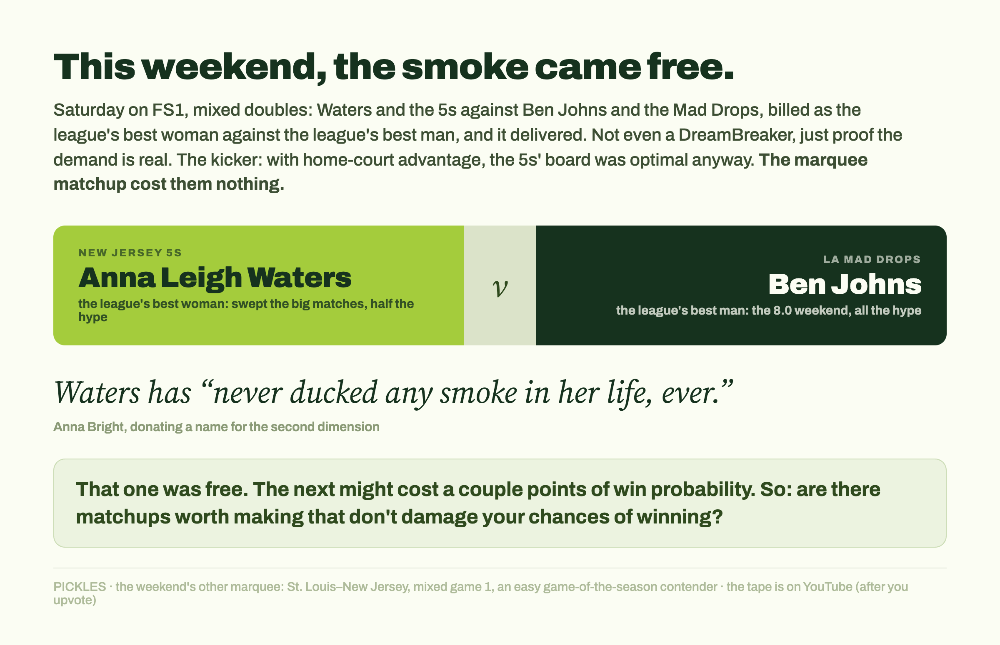
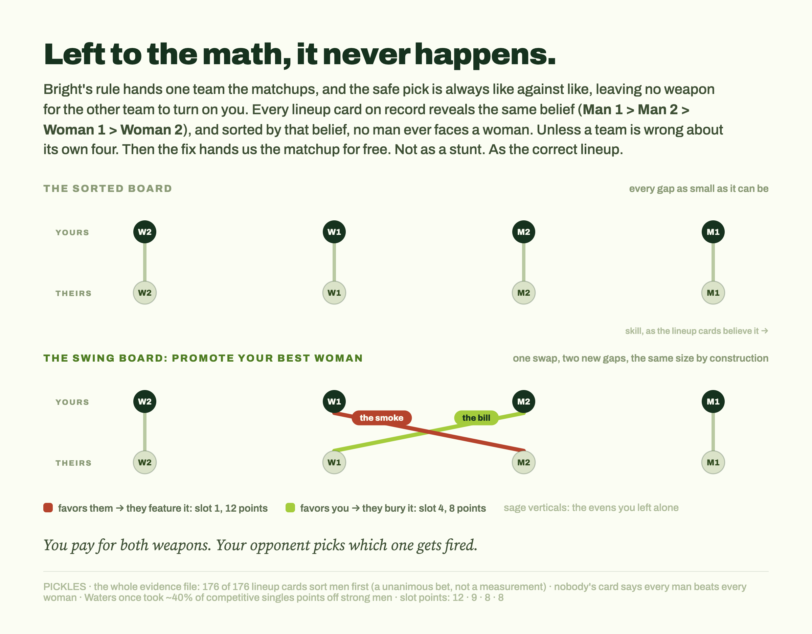
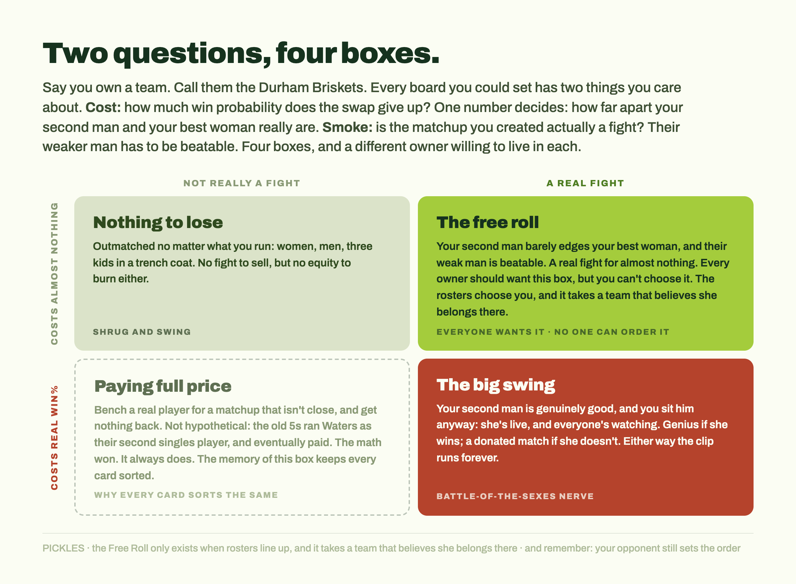

This piece is a sequel. Part I, “Solving the unsolved meta,” tested Anna Bright's DreamBreaker proposal across all of MLP and found it delivers: more strategic, more equitable, more exciting. Part II takes on the other half of her argument, the marquee man v. woman matchup. The idea is hers. So is the word this piece is named for.
Every probability here comes from PICKLES, my Bayesian rating system for pro pickleball. Notes on the numbers at the bottom.
Last time, I looked at whether Anna Bright's DreamBreaker would be more exciting and put more women on the court for the points that matters. tl;dr I did a bunch of fancy math and found that the answers are yes and yes. Today I wanted to address the second part of her proposal, and it's whether the new structure gets us the excitement of some marquee men v. women match-ups. Short answer: the format won't hand them to us for free, but this past weekend showed the demand for them is very real. So the actual question is what the matchup costs to create, and whether there are owners willing to pay it.
The first question is if a man v. woman falls out naturally from Bright's format.
Right now, one team sets their singles order (1 through 4), and the other team just matches up position for position, with no real choice involved. Bright's fix splits that into two separate jobs: one team announces the four matchups, meaning who's actually playing whom, and the other team announces the order those matchups rotate in. That second job matters a lot, because DreamBreakers don't treat every position equally. The first two rotations alone cover roughly the first 33 combined points in a race to 21, so whoever plays first gets seen the most. Under Bright's system, the team setting matchups controls who's on the court together. The team setting order controls who actually matters.
What fell out last time is that the optimal strategy is for Team 1 to minimize the gaps for all the matches, avoiding giving a weapon that Team 2 can turn against them. Before we go further, it's worth being straight about how little we actually know about the relative skills of men and women in MLP. Everything we have fits in three bullets:
That's the whole evidence file. Thin as it is, it's enough to guide the rest of the piece.
So, accepting the team's revealed beliefs, it will always be true that the gaps are minimized by sorting people of the same gender.
Man 1 > Man 2 > Woman 1 > Woman 2.
The optimal strategy will always be to pair the players with the same gender, and then Team 2 can pick the order based on their perceptions of the size of the gap.
Notice what's carrying that conclusion: the beliefs, not the math. I have no way to check whether those beliefs are accurate, and neither does anyone outside the team facilities, where the scrimmages happen and the coaches see the results firsthand. Whatever they know stays in the building. The only place it leaks out is the lineup card. But if any team is wrong about its own four players, then that team is leaving equity on the table every single DreamBreaker, and the fix would hand us a man v. woman matchup for free. Not as a stunt. As the correct lineup.
If this is true, then there's no optimal sorting to get Bright's man v. woman match-up. But that assumes that sorting is one-dimensional, and it doesn't have to be.
The second dimension showed up in the wild this past weekend, and it wasn't subtle. Neither of the marquee matches was a DreamBreaker, and as you'll see, one of them refused to be the story I wanted. But together they proved the thing every argument below depends on: when this sport gets the matchup, everyone watches.
Two marquee matchups happened and delivered at the highest possible level. The highlight was probably The St. Louis Shock and the New Jersey 5's, with the first mixed doubles game being an easy contender for game of the season. But more interesting here is a match from Saturday when ALW and the 5's faced Ben Johns and the LA Mad Drops. This was a mixed doubles match, but it was billed as the league's top woman vs. the top man (seeing a lot of love for 8.0 Ben Johns, but less love for ALW who swept the big matches).
I ran the numbers hoping for a different story, but this turned out to be an optimal sorting for the 5's who had the home team advantage. Nobody sacrificed anything for that matchup. And it was still a great match for FS1 - bringing the smoke made for great TV, and anyone who tuned in on the larger stage than PBTV got a great look at the sport with the biggest names and the biggest rivalries turning up in an incredible way. If you haven't seen the games, stop reading right away and go find them on YouTube.

People are complex, they don't just have to optimize on a single dimension. There's a second dimension here, and I'll keep stealing Bright's word for it. She wrote it best:
And smoke is exactly the right name: the smoke dimension. These were optimal plays, but those don't exist in DreamBreakers if the current strategies are to be believed. Are there opportunities to find good matches for men v. women that don't damage the chances for winning?
Let's make this concrete. Say I own a team. Call them the Durham Briskets. We're not here for a long time, we're here for a good time, and we know a thing or two about getting smoked.
Every DreamBreaker board I could set has two things I care about. The first is cost: how much win probability does the swap actually give up? That's not just about my own roster. It's about how much equity I had to begin with. The second is smoke: is the matchup I just created actually a fight? That depends on their roster. If their weaker man is beatable, we've got a show. If he's better than advertised, it's not much of a spectacle.
Two questions, two answers each. That's a 2x2, and each box has a different owner willing to live in it.
Before the boxes, one thing worth seeing clearly, because it's the trap underneath all of this. The swap moves two people, not one. My woman steps up into a matchup that's harder than even, and my benched man steps down into one that's easier. The mismatch I created on purpose and the mismatch that fell out the other side are the same size, by construction. I wanted one piece of smoke and the arithmetic billed me for a matched pair. And remember who sets the order under Bright's rules: not me. Of my two new gaps, my opponent will feature the one that favors them and bury the one that favors me. I paid for both weapons. They choose which one gets fired.

The cost of all this is just one number: how far apart my second man and my best woman really are. Which means the boxes are already written:
The Free Roll (low cost, high smoke). My second man isn't much better than my best woman, and their weak man is beatable. I give up almost nothing and get a real fight on the biggest stage. Every owner in the league should want this box. The problem is you can't choose it. It only exists when the rosters happen to line up, and you'll notice it requires something no team currently believes: that their woman belongs in that spot.
The Big Swing (high cost, high smoke). My second man is genuinely good, and I bench him anyway, because their weak man is beatable and my woman is live. This is the box for an owner with real conviction and a big appetite. You're spending actual win probability to buy a moment. If she wins, you look like a genius and the clip runs forever. If she loses, you handed away a match to make TV. This is the Battle of the Sexes box, and it takes a Battle of the Sexes kind of nerve.
Nothing to Lose (low cost, low smoke). My team's outmatched anyway. Low chances of winning no matter what I run: women, men, three kids in a trench coat. There's no smoke here because the matchups aren't close, but there's no real equity to lose either.
Paying Full Price (high cost, low smoke). I bench a real player, the matchup isn't competitive, and I get nothing for it. No owner chooses this box on purpose. This box is why the meta got solved in the first place.

And this box isn't hypothetical. Bright's own post has the receipts. The old New Jersey 5s used to run Anna Leigh Waters in singles as their second-best player. Man v. woman, on purpose. That was under the current format, but the price is the same either way, and eventually the 5s had to pay it. Putting Waters in the top-two spots when she could be overwhelmingly favored against a woman in the third position instead just wasn't worth it. The math won. It always does. It's the memory of this box, more than any spreadsheet, that keeps every lineup card in the league sorted the same way.
So where does that leave Bright's idea? The math suggests that it's very much in play.
Pure optimization of win probability is what a statistical model does, because that's the only thing a model knows how to want. But people don't buy MLP teams to do stats. (That's where I come in.) They buy MLP teams because they love this sport and can see what it might become, and that means they get to care about more than one thing at a time. On the model's single dimension, Bright's format doesn't hand out man-vs-woman matchups for free, and no format could, because as long as teams believe what their lineup cards say they believe, the safest board is always the sorted one. If that's all there was, this piece would end with a shrug.
But that's not all there is, and this weekend proved it. The 5s and the Mad Drops gave FS1 the league's best woman against the league's best man, the broadcast lit up, and Dave Fleming said the quiet part out loud: sports are built on great rivalries. That match happened to be free. The next one might cost a couple points of win probability. And the entire question of whether we get Bright's fireworks comes down to whether there are owners who look at that price tag and say, worth it.
The boxes say there will be. The Free Roll costs almost nothing when the rosters line up. The Big Swing costs real equity, but buys the exact kind of moment that gets clipped a hundred thousand times, and this league has never lacked for owners who understand what a moment is worth. Bright's format doesn't force those choices, and it shouldn't. What it does is put the choice on the table every single DreamBreaker, for both teams, in a way the current format never does. That's the real gift of her idea.
Not that the smoke becomes mandatory. That it becomes available.
She's right about the destination, too. Man versus woman, under the lights, with a match on the line, is the kind of drama no other pro sport can offer, and the sport that figures out how to bottle it is going to grow faster than the ones that don't. The math says it won't happen by accident. Fine. The best things in sports never do. Somebody has to want it, and pay for it, and put their best woman on the court against a man with everything watching.
And it won't just be Waters. Anna Leigh has never ducked any smoke in her life, ever, but she's not the only one. Bright herself doesn't exactly strike me as the type to avoid it. I can already see Kate Fahey screaming after putting a winner down the line against a male opponent, and there are plenty more where they came from. You don't get to the top of pickleball by being afraid. Bright's format finally builds them a door. All the league has to do is install it. Then we find out which owners are brave enough to walk through.
Every probability here comes from PICKLES, a Bayesian rating system I built for pro pickleball: roughly 36,000 games of training data, validated at 77.4% winner accuracy on games the model never saw. The claim that the 5s' board against the Mad Drops was optimal comes from solving that board outright, home-court advantage included. The full method, and the solution to the meta itself, is in Part I.
The 176 lineups are 88 DreamBreakers, two cards each. The Waters singles sample (roughly 40% of competitive points against strong men, a few years back) is small enough to mean almost anything; it's cited as the only public evidence there is, not as proof of anything.
Bright, Anna. “Women Don't Matter Enough at Major League Pickleball.” YouTube, June 2026: the video where she lays out the problem and the matchups-vs.-order proposal this series tests.
Bright, Anna. “Women Don't Matter Enough at MLP.” Brighter Pickleball w AB, June 15, 2026: the written version. The word “smoke,” the Waters line quoted above, and the history of the old 5s running Waters second are all from this post.
“Solving the unsolved meta.” Part I: the rotation arithmetic, the ten-point swing, the 380-pairing solve, and why Bright's rule puts a woman in slot 1 about half the time without ever mentioning gender.